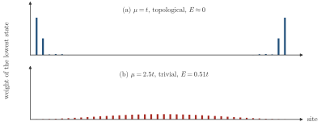
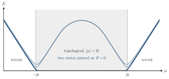
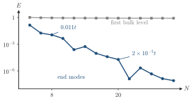

Advanced Quantum Materials 2027 · All lectures · Lecture notes
Session 5. Superconductivity, Nambu Representation and Majorana Physics
5.17 Topological zero modes with periodic and open boundaries
If we diagonalize (5.19) on a periodic chain, we obtain a fully gapped spectrum, with a superconducting gap set by \(\Delta\) and a nontrivial topological invariant of the bulk. This is the same kind of \(\mathbb{Z}_2\) or winding invariant that classified the two phases of the SSH model through the Zak phase in the topological-band-structure session, now computed from the BdG bands instead of an ordinary Bloch Hamiltonian. On an open chain, for example with \(N=100\) sites and the two ends disconnected, the bulk spectrum keeps essentially the same gap, but two extra states appear, pinned exactly at zero energy and localized at the left end and at the right end of the chain. These are the unpaired Majoranas \(\gamma_1\) and \(\gamma_{2N}\) from (5.21), which we now see as real mid-gap states of the open chain. Schematic Schematic 5.7 shows where the lowest state sits. In the topological phase its weight is at the two ends, and in the trivial phase it is spread over the chain.

These zero modes are very robust. When we move away from the fine-tuned point, with \(\Delta \ne t\) and finite \(\mu\), the zero modes survive as long as we stay in the same topological phase. The standard criterion for the general Kitaev chain (5.19) with \(\Delta \ne 0\) is
\[|\mu| < 2t \quad \Longrightarrow \quad \text{topological phase (unpaired end Majoranas)}, \qquad |\mu| > 2t \quad \Longrightarrow \quad \text{trivial phase.} \tag{5.22}\]
In the trivial phase, a large chemical potential effectively fixes each site to be either empty or occupied in the fermionic language, since the chain is spinless, and the two Majoranas that form the electron of each site combine again locally into an ordinary confined fermion, so nothing is left to deconfine. In the topological phase, on the other hand, p-wave pairing dominates over the trivial onsite physics, and the two Majoranas at each site pair with the Majoranas of the neighboring sites instead of with each other, which leaves the two end Majoranas without any partner. This is the same contrast between the dimerized strong-coupling limit and the atomic weak-coupling limit that distinguished the topological and trivial phases of the SSH model. The Kitaev chain reproduces it because, as we saw in section 5.16, it is the SSH model with new labels.

An open Kitaev chain with \(\Delta=0.5t\) and \(\mu=t\) has two Majoranas at its ends. We change the chemical potential to \(\mu=-t\). What happens to them?
Show the answers
- A. ✓ True
This is true. In both cases \(|\mu|=t<2t\), so the chain stays in the topological phase of (5.22). The end Majoranas remain, and only the position of the bulk band changes.
- B. ✗ False
This is false. The gap of the chain closes only at \(|\mu|=2t\), where \(k=0\) or \(k=\pi\) has \(E=0\). Going from \(\mu=t\) to \(\mu=-t\) never crosses \(\pm2t\), so no transition happens.
- C. ✗ False
This is false. Two Majoranas on the same end can couple, since \(i\gamma_1\gamma_1'\) is an allowed term, so they would gap out. A single Kitaev chain has one Majorana per end in any case.
A Kitaev chain with \(N=8\) sites, \(\Delta=0.5t\) and \(\mu=t\) is in the topological phase. Are its two end modes at exactly zero energy?
Show the answers
- A. ✗ False
This is false. Take \(\Delta=0.5t\) and \(\mu=t\) with \(N=8\). The BdG spectrum has the lowest level at \(E\approx0.011t\) and not at zero. For \(N=20\) it falls to \(2\times10^{-5}t\).
- B. ✓ True
This is true. The end modes have a finite localization length, so for a short chain they overlap and hybridize. For \(\Delta=0.5t\) and \(\mu=t\) the splitting is \(0.011t\) at \(N=8\) and \(2\times10^{-5}t\) at \(N=20\).

The lowest level of the open chain against its length, for \(\Delta=0.5t\) and \(\mu=t\). It falls roughly exponentially with oscillations, and the first bulk level stays near \(0.8t\). - C. ✗ False
This is false. For \(\Delta=0.5t\) and \(\mu=t\) the bulk gap is \(0.82t\), while the end modes of an \(N=8\) chain are at \(0.011t\). They are inside the gap, close to zero.
Try it. In the cell, the line mu = 0.3 sets the chemical potential. With mu = 1.0 the two states near zero energy stay. With mu = 2.5 they disappear, and for \(L=40\) the lowest energy is about 0.5, in line with (5.22).